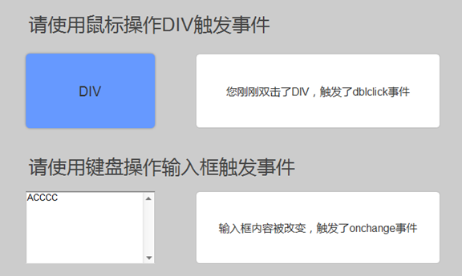

匿名函数：没有名字的函数
function () {
console.log(123)
}
var test = function () {
console.log(123)
}
div.onclick = function () {
console.log(123)
}
自调用函数（IIFE）
Immediately Invoked Function Expression （ 立即调用函数表达式）
;(function () {
console.log(123)
})()
注意：自调用函数如果前一行没有分号，要在前面加上分号
先来看一道题
alert(a);
var a = 1;
alert(a);
function a(){alert(2);}
alert(a);
var a = 3;
alert(a);
function a(){alert(3);}
alert(a);
JS运行和编译
查找基本语法有没有错误
执行之前进行预解析
var、function关键字提前到当前作用域的顶部，变量默认值为undefined，函数默认值为函数体代码块，当函数与变量重名时，保留函数。
事件（简单认识了解）
用户的行为：onclick、ondblclick、onfocus、onblur、window.onload
是用户跟页面的交互，当用户跟页面进行一些“交流”的时候，页面通过js就会触发一些事件，比如鼠标点击的时候就会触发onclick事件，给这个事件绑定一个函数，那么这个时候函数就会被调用，代码就会被执行
事件类型：
鼠标事件：click，dblclick，mousedown，mouseup，mouseover，mouseout，mouseenter、mouseleave、mousemove
scroll mousewheel 鼠标滚轮
contextmenu 鼠标右键（上下文菜单：在不同环境下右键菜单不一样）
mouseover：鼠标在元素身上移动穿过子元素的时候会被反复触发
mouseenter：只是在进入元素的时候触发
键盘事件：keydown，keyup，keypress
表单事件：对表单元素操作之后会触发的事件
单选框、多选框、下拉菜单 状态改变的时候会触发 onchange 事件
表单提交的时候会触发 onsubmit 触发在<form>元素身上
this关键字:事件函数里面的this指的是事件触发对象
练习
